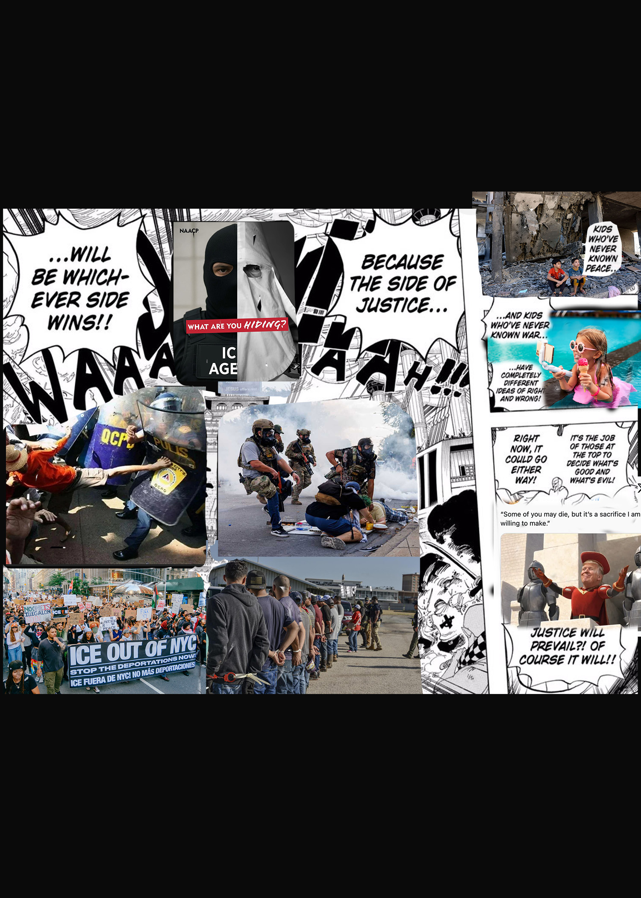
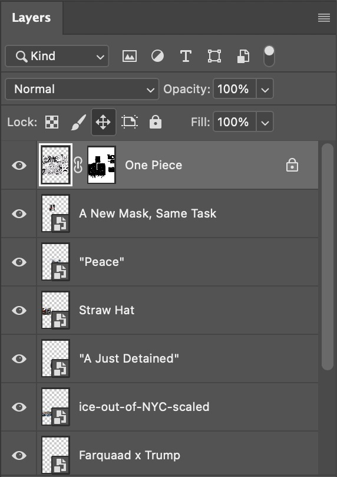
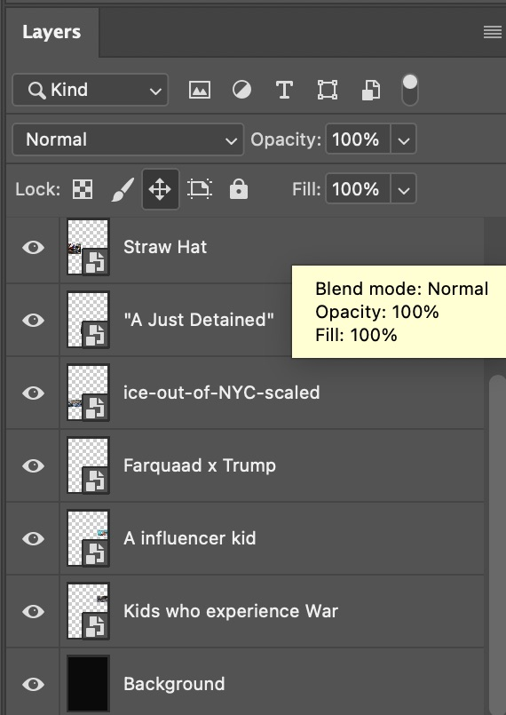

The initial idea I had for this poster was to showcase how the world had turned upside down once more. Or rather, the world once again wants to remind us of how ugly it can be. We have a president who clearly wants another World War to happen. We have ICE tracking down and arresting people who are just trying to make a living, and another protest campaign that most of the public will see as an annoyance rather than hearing their message. Like, seriously, how did we get up to this point?
When creating the poster, I chose the background as black since white did not make sense. White to me represents life, while black represents death. But you may ask, the panel you use is white. Well, that is just something I wanted to point out. Anyway, the process was simple; I just implemented photos, always bringing the first image dubbed “One Piece” on top and then adding a mask. This is how I was able to blend the images into the first image, to the best of my ability.